⚠️ Screen too narrow
best viewed in landscape or larger window
CNC Measure and Machine - Reimagined
Needed to rework high tolerance CNC parts which required manual probing operation.
Reimaginded a "hack" solution of CNC machine. GCode program automatically probes for center then reams.
Summary of Video:
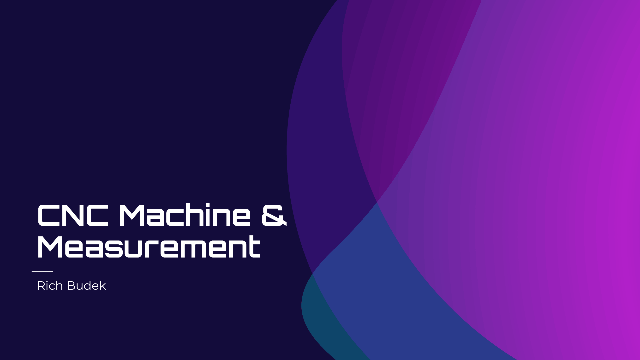
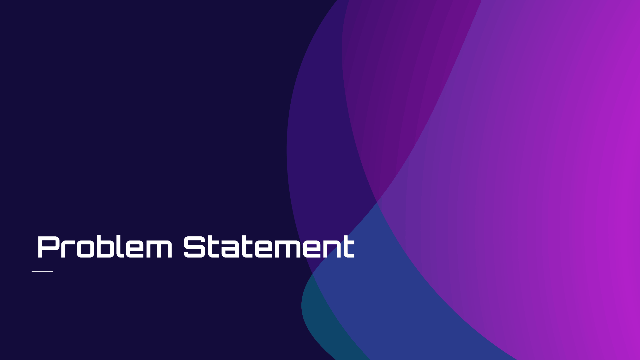
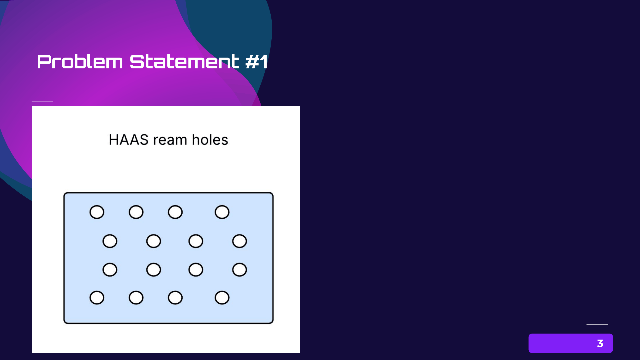
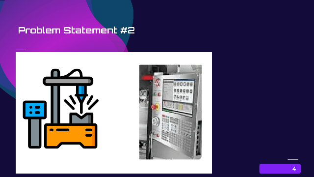
Problem Statement - HAAS Machine
Has two modes
Graphical operator mode
_ can use to position the probe
_ can use to then reset the coordinates
Program Run mode (GCode)
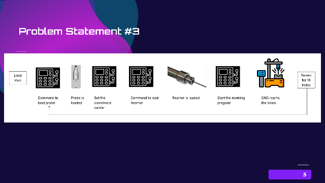
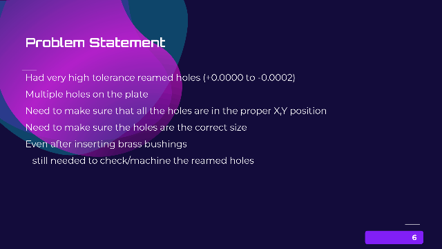
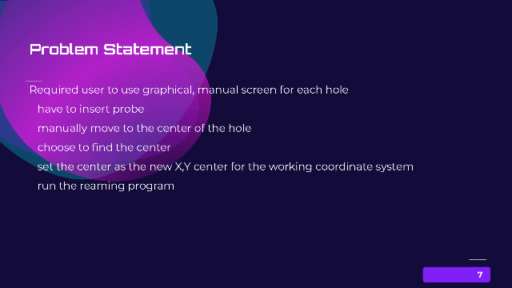

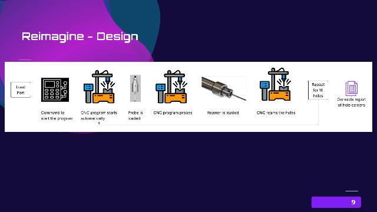
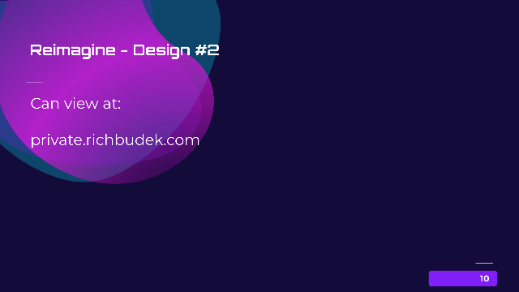
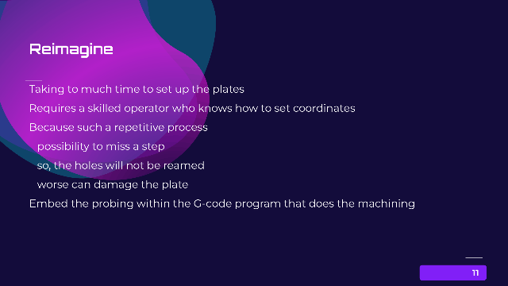

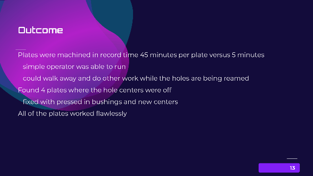

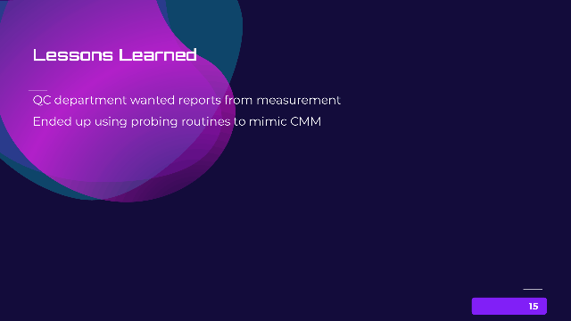
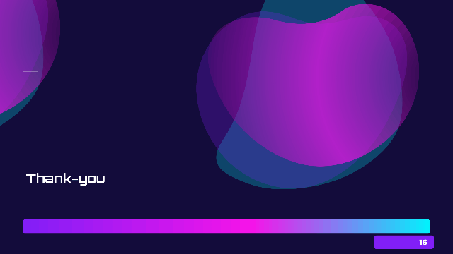